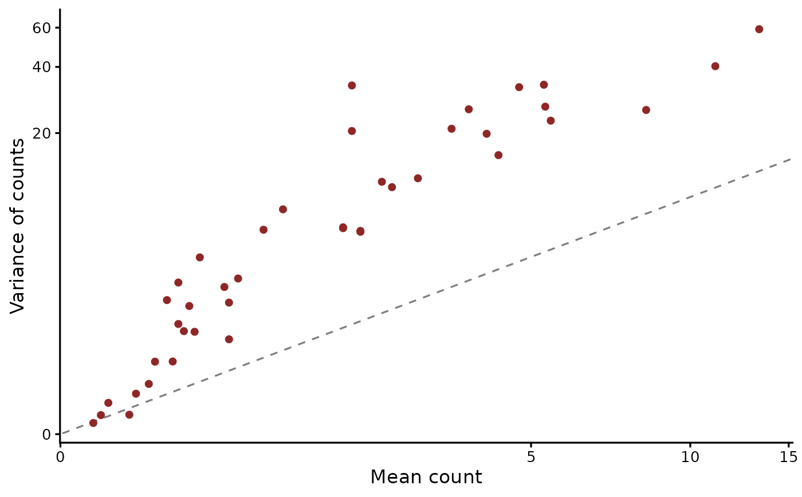
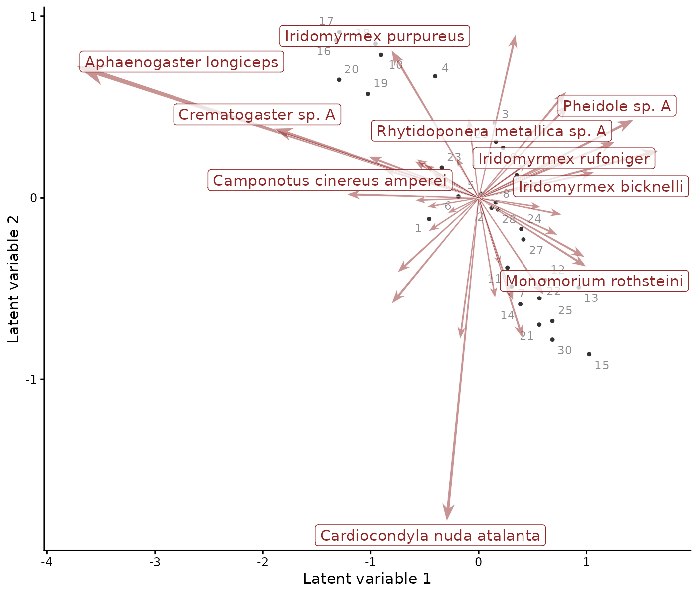
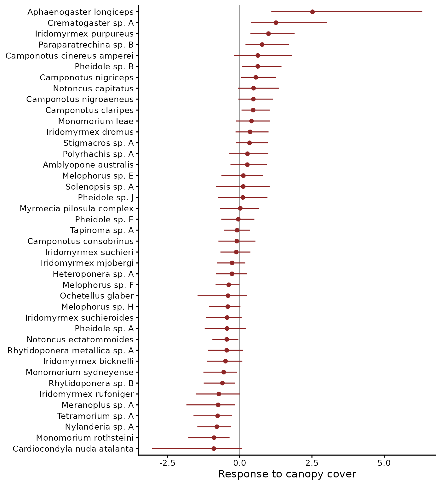
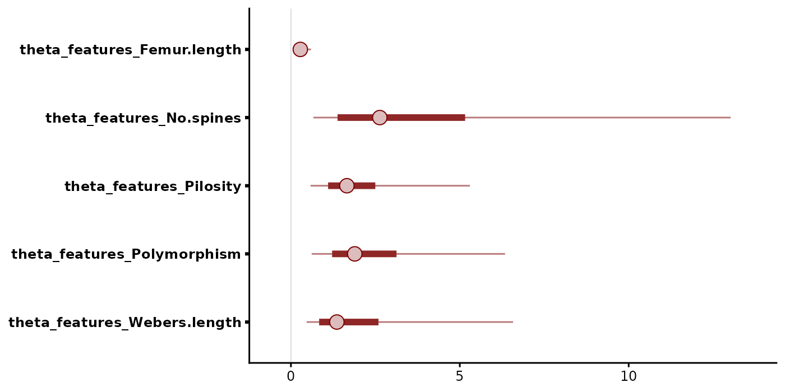
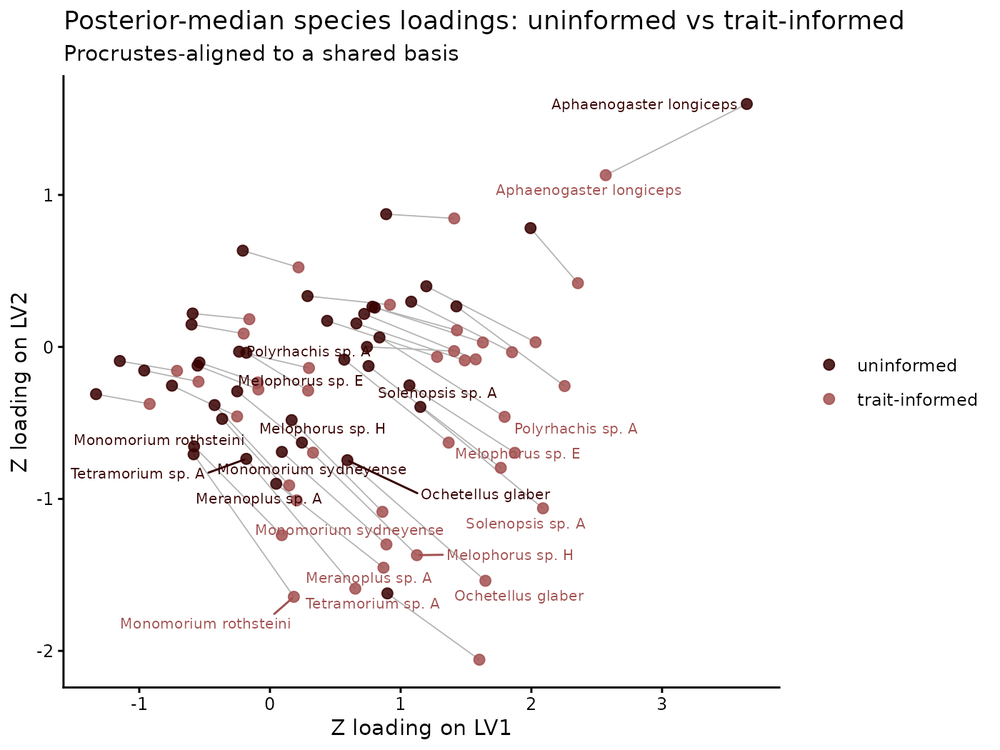
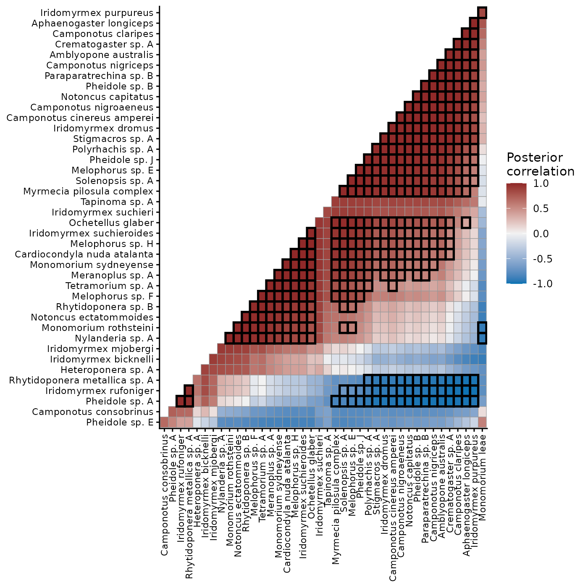
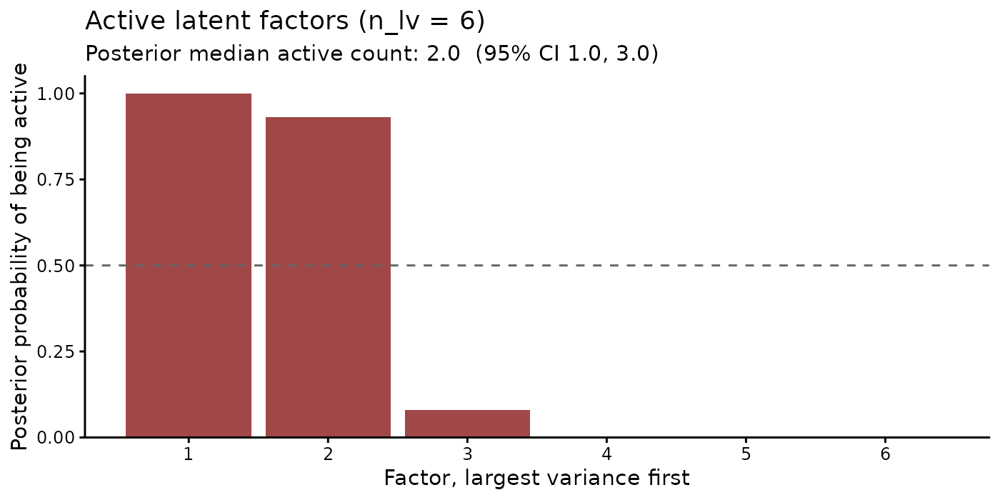

Joint species distribution models with mvgam
Nicholas J Clark
2026-10-28
Source:vignettes/articles/jsdgam.Rmd
jsdgam.RmdJoint species distribution models (JSDMs) assign the species co-occurrence that remains once the measured environment is accounted for to a few latent factors (Warton et al. 2015; Ovaskainen et al. 2017). The loadings imply a residual covariance among species. The factor scores ordinate the sites.
jsdgam() fits this model with the loadings identified by
a QR rotation (Heaps and Jermyn 2024). This
article fits it to counts of epigaeic ants at 30 sites in south-eastern
Australia (Gibb et al. 2015) and adds
three extensions in turn: environmental effects that act through the
factors, a loadings prior informed by species traits and a prior under
which the data decide how many factors are active.
The data
antTraits from the mvabund package holds counts of 41
ant species at 30 sites, five environmental covariates and five species
traits. Two traits are ordinal scores, which the code below converts to
numbers. jsdgam() takes one row per site and species:
data(antTraits, package = "mvabund")
abund <- antTraits$abund
# Restore the species names that make.names() mangled, such as
# "Pheidole.sp..A" for "Pheidole sp. A"
species_names <- gsub("\\.(?=\\S)", " ",
gsub("\\.\\.", ". ", colnames(abund)), perl = TRUE)
colnames(abund) <- species_names
env <- as.data.frame(scale(antTraits$env))
traits <- antTraits$traits
rownames(traits) <- species_names
# Pilosity and polymorphism are scores stored as unordered factors
traits$Pilosity <- as.numeric(as.character(traits$Pilosity))
traits$Polymorphism <- as.numeric(as.character(traits$Polymorphism))
ant_data <- data.frame(
site = rep(seq_len(nrow(abund)), times = ncol(abund)),
species = factor(rep(colnames(abund), each = nrow(abund)),
levels = colnames(abund)),
counts = as.vector(as.matrix(abund))
)
ant_data <- cbind(ant_data, env[ant_data$site, ])Because the variance of each species’ counts rises well above its mean, the counts take a negative binomial family:
moments <- data.frame(
mean = tapply(ant_data$counts, ant_data$species, mean),
var = tapply(ant_data$counts, ant_data$species, var)
)
ggplot(moments, aes(mean, var)) +
geom_abline(linetype = "dashed", colour = "grey50") +
geom_point(colour = "#8F2727") +
scale_x_continuous(trans = "log1p") +
scale_y_continuous(trans = "log1p") +
labs(x = "Mean count", y = "Variance of counts")
Mean and variance of each species’ counts on log1p axes. The dashed line marks the equality a Poisson family would imply.
Latent factors alone
The first model leaves all structure among species to two latent
factors. factor_formula = ~ -1 puts no covariates on the
factors:
mod_base <- jsdgam(
counts ~ 1,
factor_formula = ~ -1,
data = ant_data,
family = negbinomial(),
n_lv = 2,
unit = site,
species = species,
chains = 4, seed = 2025, silent = 2
)ordinate() draws the posterior medians of the site
scores and the species loadings as a biplot:
ordinate(mod_base)
Biplot of the site scores (numbered points) and species loadings (arrows) from the model with latent factors alone.
The loadings of Aphaenogaster longiceps and Crematogaster sp. A lie furthest from the origin. Their abundances vary most across sites beyond what the intercepts predict.
Environmental effects on the factors
A constrained ordination lets the environment move the sites along
the factors. lv_axis() in factor_formula gives
each factor its own slope on a covariate. Each species then responds to
the covariate through its loadings, with two slopes per covariate in
place of 41:
mod_env <- jsdgam(
counts ~ 1,
factor_formula = ~ -1 + Bare.ground:lv_axis() +
Canopy.cover:lv_axis() + Shrub.cover:lv_axis(),
data = ant_data,
family = negbinomial(),
n_lv = 2,
unit = site,
species = species,
chains = 4, seed = 2025, silent = 2
)
fixef(mod_env, trend_effects = TRUE)
#> Estimate Est.Error Q2.5 Q97.5
#> Bare.ground:.trend1_trend 0.13564181 0.2762347 -0.4420674 0.6554589
#> Bare.ground:.trend2_trend 0.17603198 0.3102579 -0.4708602 0.7279889
#> .trend1:Canopy.cover_trend 0.45383186 0.5148217 -0.7700835 1.2997788
#> .trend2:Canopy.cover_trend 0.57566623 0.5925456 -0.7755250 1.4164902
#> .trend1:Shrub.cover_trend -0.01004982 0.2378052 -0.4644986 0.4670960
#> .trend2:Shrub.cover_trend 0.08467129 0.2624600 -0.4590928 0.5574199fixef() reports the slopes in the same rotated basis as
the identified loadings Z_tilde. A species’ response is the
product of its loadings and these slopes.
posterior_linpred() returns it as the change in each
species’ linear predictor between two sites that differ only in canopy
cover:
newdata <- expand.grid(species = levels(ant_data$species),
Canopy.cover = c(0, 1))
newdata$site <- 1
newdata$Bare.ground <- 0
newdata$Shrub.cover <- 0
lp <- posterior_linpred(mod_env, newdata = newdata)
canopy <- lp[, newdata$Canopy.cover == 1] - lp[, newdata$Canopy.cover == 0]
canopy_q <- data.frame(
species = levels(ant_data$species),
t(apply(canopy, 2, quantile, c(0.025, 0.5, 0.975)))
)
names(canopy_q)[2:4] <- c("lo", "med", "hi")
canopy_q$species <- reorder(canopy_q$species, canopy_q$med)
ggplot(canopy_q, aes(med, species)) +
geom_vline(xintercept = 0, colour = "grey60") +
geom_pointrange(aes(xmin = lo, xmax = hi), colour = "#8F2727",
size = 0.25) +
labs(x = "Response to canopy cover", y = NULL)
Posterior median and 95% credible interval of each species’ response to one standard deviation of canopy cover, on the log scale of expected counts.
The intervals of 16 of the 41 species exclude zero. The median responses run from -0.90 for Cardiocondyla nuda atalanta to 2.52 for Aphaenogaster longiceps.
Trait-informed loadings
The default prior treats every species’ loadings as independent. The
traits argument replaces it with the structured prior of
Heaps and Jermyn (2024). Each column
of loadings is drawn from a multivariate normal whose covariance among
species comes from a kernel on the standardised traits, with one length
scale per trait. A short length scale lets that trait separate species’
loadings. A long one leaves them exchangeable.
mod_traits <- jsdgam(
counts ~ 1,
factor_formula = ~ -1,
data = ant_data,
family = negbinomial(),
n_lv = 2,
traits = traits,
unit = site,
species = species,
control = list(adapt_delta = 0.95),
chains = 4, seed = 2025, silent = 2
)Each length scale is named for its trait:
mcmc_plot(mod_traits, variable = "theta_features", regex = TRUE,
type = "intervals")
Posterior medians with 50% and 90% credible intervals of the length scale of each trait.
The median length scale of Femur length, 0.28, is the shortest of the
traits. It falls below the 5% quantile of 4 of the other 4 traits’
length scales. A shorter length scale gives a trait’s differences
between species more weight in the loadings prior.
compare_loadings() aligns the two fits’ loadings by a
Procrustes rotation and draws how far each species moved:
compare_loadings(mod_base, mod_traits,
labels = c("uninformed", "trait-informed"),
label_species = "shift")
Posterior median loadings of each species without and with the trait prior, aligned to a shared basis. Labels mark the ten species that moved furthest.
Leave-one-out cross-validation compares the two priors on the same likelihood:
loo_cmp <- loo_compare(list(uninformed = loo(mod_base),
`trait-informed` = loo(mod_traits)))
loo_cmp
#> model elpd_diff se_diff p_worse diag_diff diag_elpd
#> trait-informed 0.0 0.0 NA 20 k_psis > 0.7
#> uninformed -30.8 8.0 1.00 21 k_psis > 0.7Leave-one-out ranks the trait-informed prior first. The other trails it by 30.8 (SE 8.0) in expected log predictive density.
Residual correlations
residual_cor() summarises the posterior residual
correlation between every pair of species.
plot(cluster = TRUE) orders the species to bring blocks of
co-occurring species onto the diagonal:
rcor <- residual_cor(mod_traits)
plot(rcor, cluster = TRUE)
Posterior median residual correlations from the trait-informed model. Outlined cells have 95% intervals excluding zero.
Of the 820 species pairs, 320 correlate positively and 51 negatively with intervals that exclude zero. A residual correlation may reflect a shared response to an unmeasured driver or an interaction between species. The model alone cannot tell the two apart.
How many factors?
The models so far fixed two factors. A multiplicative gamma process
prior (Bhattacharya and Dunson 2011) shrinks each
column of loadings more strongly than the one before. With a generous
ceiling, the data decide how many columns stay away from zero. The prior
combines with the trait kernel through loadings_prior:
mod_mgp <- jsdgam(
counts ~ 1,
factor_formula = ~ -1,
data = ant_data,
family = negbinomial(),
n_lv = 6,
loadings_prior = list(column_shrinkage = "mgp", features = traits),
unit = site,
species = species,
chains = 4, seed = 2025, silent = 2
)active_factors() splits the covariance the factors give
the species into principal dimensions. A dimension is active when its
variance is at least a tenth of the leading dimension’s, with posterior
probability of at least one half.
af <- active_factors(mod_mgp)
plot(af)
Posterior probability that each factor, largest first, is active. The dashed line marks the threshold.
In this fit, 2 of the six factors are active, against the two the earlier models fixed.
Summary
The trait prior and column shrinkage tested two assumptions of the
first ant community models: independent loadings and two factors.
Leave-one-out ranked the trait-informed prior first, by 30.8 in expected
log predictive density against a standard error of 8.0. Given a ceiling
of six factors, the shrinkage prior kept 2 active, against the two the
first models assumed. Each extension is one argument to a single
jsdgam() call, as are the environmental slopes that gave
all 41 species a canopy response from three covariates.
Where to next
Each function used here has a help page, such as
?jsdgam, ?lv_axis or ?ordinate,
with its arguments and output. how_to_cite() writes a
methods paragraph for a fitted model, naming the architecture it used.
jsdgam() also takes a phylogeny through phylo,
trait-mediated environmental responses through trait_slopes
and imperfect detection through the occ() family.
Related articles:
- Dynamic factor models give the factors dynamics over time.
-
N-mixture models cover the closure-unit
families that
occ()belongs to. - mvgam overview introduces the observation and trend formulas.
References
Bhattacharya A and Dunson DB (2011). Sparse Bayesian infinite factor models. Biometrika 98(2), 291-306. doi:10.1093/biomet/asr013
Gibb H, Stoklosa J, Warton DI, Brown AM, Andrew NR and Cunningham SA (2015). Does morphology predict trophic position and habitat use of ant species and assemblages? Oecologia 177(2), 519-531. doi:10.1007/s00442-014-3101-9
Heaps SE and Jermyn IH (2024). Structured prior distributions for the covariance matrix in latent factor models. Statistics and Computing 34, 143. doi:10.1007/s11222-024-10454-0
Legramanti S, Durante D and Dunson DB (2020). Bayesian cumulative shrinkage for infinite factorizations. Biometrika 107(3), 745-752. doi:10.1093/biomet/asaa008
Ovaskainen O, Tikhonov G, Norberg A, Blanchet FG, Duan L, Dunson D, Roslin T and Abrego N (2017). How to make more out of community data? A conceptual framework and its implementation as models and software. Ecology Letters 20(5), 561-576. doi:10.1111/ele.12757
Warton DI, Blanchet FG, O’Hara RB, Ovaskainen O, Taskinen S, Walker SC and Hui FKC (2015). So many variables: joint modeling in community ecology. Trends in Ecology and Evolution 30(12), 766-779. doi:10.1016/j.tree.2015.09.007